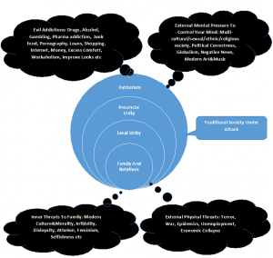

Sponsored Article is ROK's official account that publishes sponsored articles from advertisers. If you are interested hiring a sponsored article for your site, product, or service, visit our advertising page.


The following article was sponsored by the editor at Expandourmind
This series of articles will present the challenges facing modern people and some hidden historic reasons for them. In the first part we investigate ancient wisdom from Plato and the initial subversion plans created by the 18th century secret societies and their connections to Marxism as we know it. It is quite obvious that communism rules the whole world today and that we march toward a communist world state no matter which political party we vote for.
Plato
Let´s start with Plato´s wisdom about society´s organization. In his book “Republic”, book VIII, Plato explains the process of the collapse of a civilization going from aristocracy with a ruling philosopher King down to a diabolic tyranny at the end. The precursor of complete tyranny is democracy and we seem to be at the very end of the democratic phase today. Plato states(from Wikipedia):
“Oligarchy then degenerates into democracy where freedom is the supreme good but freedom is also slavery.” In democracy, the lower class grows bigger and bigger. The poor become the winners. People are free to do what they want and live how they want. People can even break the law if they so choose. This appears to be very similar to anarchy.
Plato uses the “democratic man” to represent democracy. The democratic man is the son of the oligarchic man. Unlike his father, the democratic man is consumed with unnecessary desires. Plato describes necessary desires as desires that we have out of instinct or desires that we have in order to survive. Unnecessary desires are desires we can teach ourselves to resist such as the desire for riches.
The democratic man takes great interest in all the things he can buy with his money. He does whatever he wants whenever he wants to do it. His life has no order or priority. Democracy then degenerates into tyranny where no one has discipline and society exists in chaos. Democracy is taken over by the longing for freedom. Power must be seized to maintain order. A champion will come along and experience power, which will cause him to become a tyrant. The people will start to hate him and eventually try to remove him but will realize they are not able.
The tyrannical man is the son of the democratic man. He is the worst form of man due to his being the most unjust and thus the furthest removed from any joy of the true kind. He is consumed by lawless desires which cause him to do many terrible things such as murdering and plundering.”
If we consider Plato´s democratic society where everyone looks for personal pleasure we can compare with our modern pleasure-seeking and materialistic society. At the same time there is enormous mental pressure and all kinds of dangers facing modern people today. There is a constant information flow from the media, our education system, movies, music and art etc to control our minds. Then there are all the addictions to weaken people coming from modern drugs, junk food, big pharma, materialism, MSM etc. There are all kinds of physical threats to ourselves and our society like terror, wars, epidemics, disasters etc. Finally there is the inner threat of family dissolution at home due to the moral collapse of modern people where everyone fights everyone in line with Marxist theories.

Isn´t it dangerous to live in this kind of society? It surely looks attractive on the surface with all its high technology and material abundance but underneath the surface it has become a poisonous viper that destroys people´s minds without people realizing it. If adults don´t get it how can innocent children understand? They can´t understand and that is why they are in such deep trouble. How did we end up in this perilous situation? I investigated the hidden history of Marxism and it was a very different story than what I imagined it to be from reading textbooks.
Marquis de Luchet, who were opposed to the secret sect of Illuminati but supportive of the French revolution, said in a speech:
There exists a conspiracy in favor of despotism, against liberty, of incapacity against talent, of vice against virtue, of ignorance against enlightenment. This society aims to govern the world.
The common free man, his family, his children, his religion and his country are just about to be wiped out unless he gets up and fights for his freedom. There are many powerful people who have spilled the beans over the last 250 years or so concerning the global communist conspiracy.
This story of global subversion of mankind goes back hundreds of years and relates back to the fall of the European monarchies and the rise of secret traitors belonging to the nobility in every country. Some of the nobility across Europe was tempted by money and power to revolt against their own kings. The secret society of Illuminati recruited many high ranking members of the nobility and their Master plan to conquer the world was discovered by the Bavarian police in 1784:
Does it look familiar? It´s the condensed version of the “Communist Manifesto”. Few people know that Karl Marx copied the marxist plans from these Secret Societies and made them more attractive to the masses. His famous “Communist Manifesto” was published in 1848. There are three important and hidden principles in all Marxist subversion plans:
When we look carefully into the real history it turns out virtually every revolution including the American and French revolutions were organized by the big bankers and the secret societies. In Europe they bribed the scoundrels of society to incite violence and kill their opposition. The bankers´ role should not be underestimated and Rothschild himself directly financed the Paris Commune in 1871 when about 12 000 people were executed and the church came under heavy attack by the marxists.
In the next part we will take a look at the crucial theory of dialectics by Hegel and how it can be used to control democracy in a Marxist direction. Lenin stated:
It is impossible to completely understand Marx’s Capital, and especially its first Chapter, without having thoroughly studied and understood the whole of Hegel’s Logic. Consequently, half a century later none of the Marxists understood Marx!!
We will also take a look at ancient subversion strategies from China and the Machiavellian tactics of the Marxists. Their plot to destroy our civilization is extensive, long-term and incredibly evil.